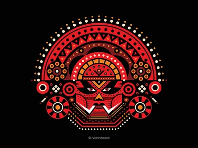
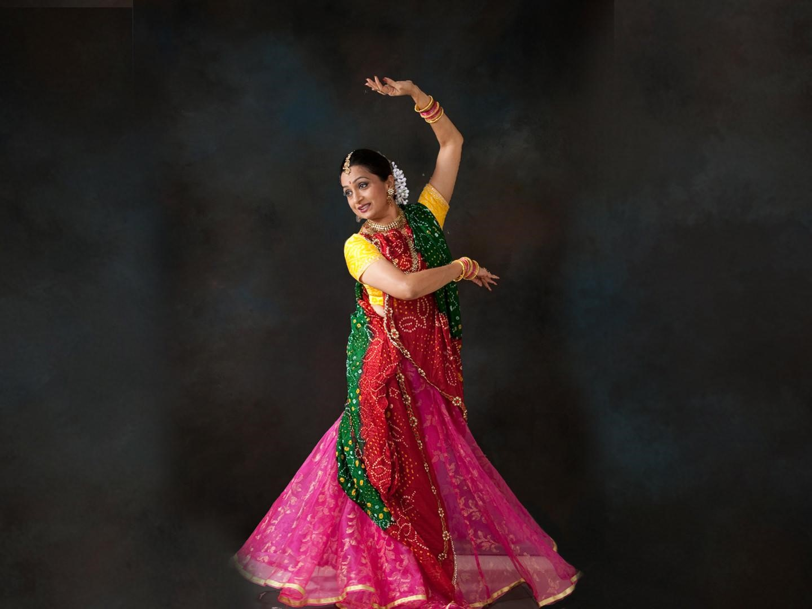

INDIAN ART GALLERY
Home
Sign Up
Sign In
Contact
Art Form

Previous
Next
WELCOME TO INDIAN ART GALLERY
Got A Question or Need Something Specific?
Let us know and we'll get back to you
Call us now
Send us Msg